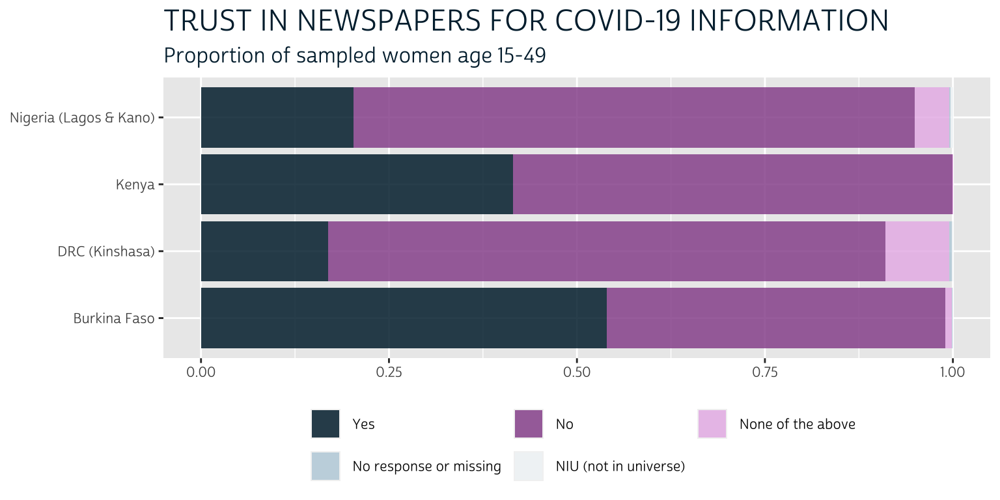
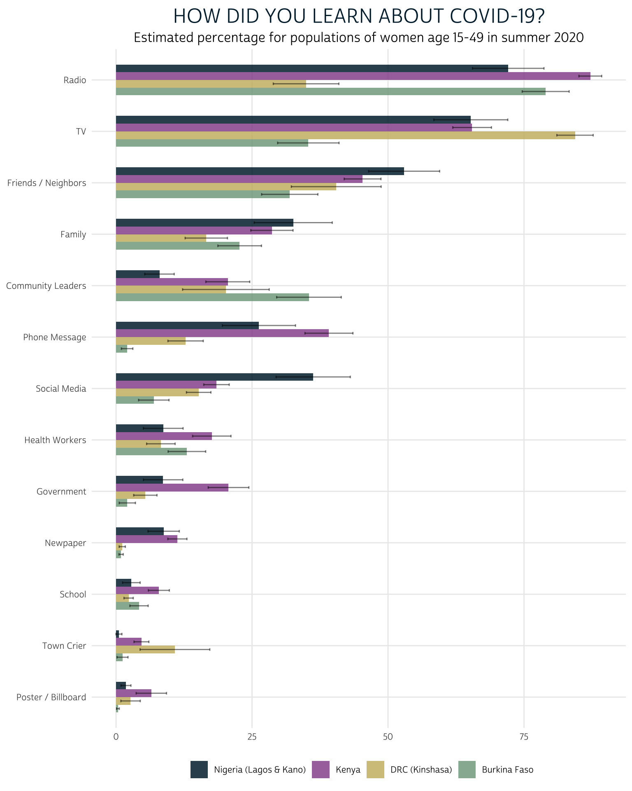
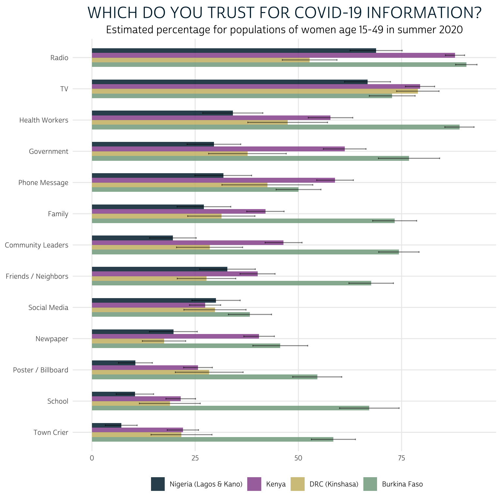
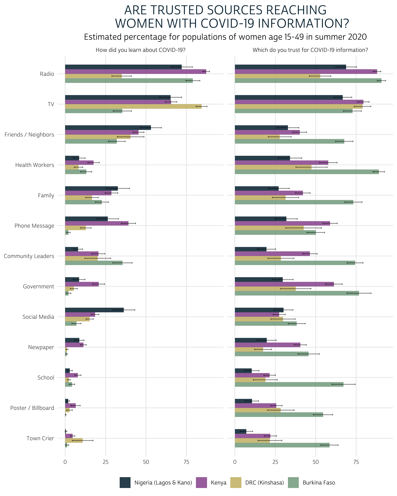
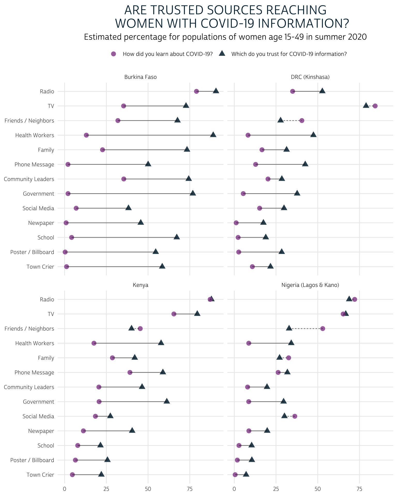
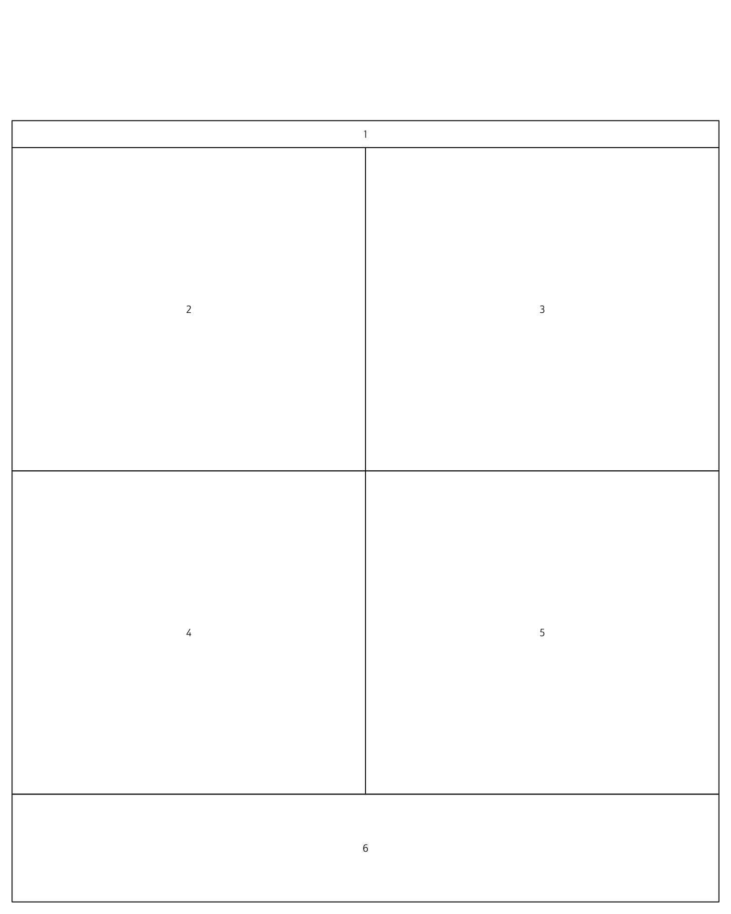
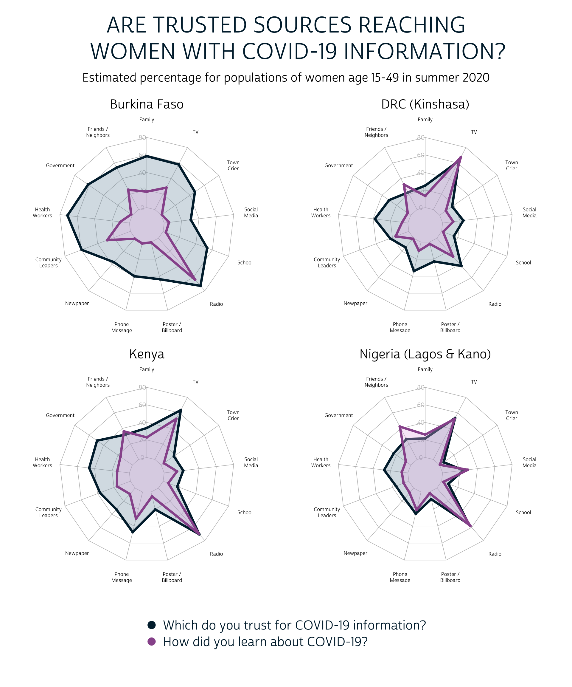

You can compare levels of trust and efficacy for 13 information sources in 4 countries with data from the new PMA COVID-19 survey. Let’s talk data visualization options.
In our last post, we discussed some of the strategies you might use to compare items from the PMA COVID-19 questionnaire that use a Likert-type response scale. Another type of question used in the COVID-19 survey - and all PMA surveys - follows the “select all that apply” format. Responses from this type of question appear as a series of related binary (“yes” or “no”) variables on the IPUMS PMA website.
In this post, we’ll go over some of the strategies you might use to process and synthesize data from a large number of related variables, like those created from “select all that apply” style questions. First, we’ll review one of our favorite tools for manipulating lots of variables at once: the across function from dplyr. Then, we’ll explore our data in three different layouts: the faceted bar chart, the lollipop chart, and the beautiful (if controversial) radar chart.
As we’ll see, each of these three layouts makes it possible to compare multiple questions posed with the same list of “select all that apply” response options. In our case, we’ll look at two questions that are each related to sources of information about COVID-19. Because both questions feature the same list of 13 possible information sources, we’ll be working with 26 variables in total:
202. How did you learn about Coronavirus (COVID-19)? Select all that apply:
[] Newspaper
[] Radio
[] Television
[] Poster / billboard
[] Town crier
[] Phone message
[] Family
[] Friends / neighbors
[] Community/religious leaders
[] Social media (Twitter, Facebook, WhatsApp)
[] Health personnel
[] Messages from government or authorities
[] School
[] None of the above
[] No response204. Which of these sources do you trust for accurate information about
Coronavirus (COVID-19)? Select all that apply:
[] Newspaper
[] Radio
[] Television
[] Poster / billboard
[] Town crier
[] Phone message
[] Family
[] Friends / neighbors
[] Community/religious leaders
[] Social media (Twitter, Facebook, WhatsApp)
[] Health personnel
[] Messages from government or authorities
[] School
[] None of the above
[] No responseBefore we think about how to visualize the responses to both of these questions, we’ll need to change a few things about the way they’re coded in each of the 26 corresponding variables. Suppose we’ve downloaded an extract from the IPUMS PMA website (all four samples, Female Respondents only) and we’ve put it in the “data” folder in our working directory. We’ll load a few packages (which you’ll need to install if you haven’t done so before), and we’ll load the extract into R:
You’ll find that all of the variables derived from the response options for the first question (“How did you learn about Coronavirus (COVID-19)?”) share the same prefix CVLEARN, and all of the variables derived from the response options from the second question (“Which of these sources do you trust for accurate information about Coronavirus (COVID-19)?”) share the same prefix CVTRUST. For example, you’ll find the responses for “Newspaper” recorded in CVLEARNNEWS and CVTRUSTNEWS.
Taking a look at a variable like CVTRUSTNEWS, you’ll notice that these variables contain several different top-codes associated with different reasons for non-response:
covid %>% count(CVTRUSTNEWS)
# A tibble: 5 x 2
CVTRUSTNEWS n
<int+lbl> <int>
1 0 [No] 7071
2 1 [Yes] 4886
3 2 [None of the above] 208
4 98 [No response or missing] 10
5 99 [NIU (not in universe)] 9The top-codes 98 and 99 should be familiar to regular IPUMS data users: they represent women who selected the “No response” option, and women who were ineligible to respond (see the Universe tab). The code 2 represents women who trust “None of the above” sources, including “Newspaper”.
Importantly, the number of women who selected codes 2, 98, and 99 will be the same for all variables derived from the same “select all that apply” question. While there are some analytic contexts where you might want to identify women who selected “None of the above”, this information could be collapsed with “No” responses in our plots. The simplest way to visualize data from these variables is to first transform them into simple binary indicators taking the logical values TRUE, FALSE, or NA.
In previous posts, we’ve suggested changing labelled variables into factors for most data visualization and analysis applications. That’s because IPUMS value labels won’t appear in graphics or model summary output by default; you’ll instead see the numeric codes associated with each response (0, 1, 2, 98, 99, etc).
Binary variables are different: it’s not always necessary to plot both the “Yes” and “No” responses, and this is particularly true where the non-response frequency is low. Look at this stacked bar chart that includes all of the available response categories, including non-response options:

The non-response options barely appear on the plot at all: they comprise less than 1% of the respondents for each sample, so their presence in the legend adds unnecessary clutter. Meanwhile, the options “No” and “None of the above” could be collapsed into a single response; however, because we’ll be plotting 26 variables like this one, we’ll find that plotting only the “Yes” responses will provide much needed visual space to the final chart. In other words, we’ll rely on the reader to infer “No” responses through the use of negative space.
Because we plan to plot only the proportion of “Yes” responses in each variable, we won’t need value labels displayed in a legend. This makes it unnecessary to convert our variables into factors. Instead, we’ll convert our variables into logical objects that take the values TRUE, FALSE, or NA. As we’ll see, this makes it easy to pre-filter only the cases where our variables of interest were coded 1 for “Yes”.
Another reason you should avoid creating binary factors is that factors are not meaningful in certain mathematical contexts. For example, we might want to exploit the mean of a binary variable as a handy way to generate the proportion of women who responded “Yes”. This won’t work if you create a factor:
Logical objects behave like integers in mathematical evaluation: every TRUE value is automatically treated as the value 1, and every FALSE value is automatically treated as the value 0.
Converting labelled integer variables into logical variables is simple, but you must first remove value labels with the function zap_labels(). Here, we’ll also want to collapse code 2 together with code 0, and we’ll adopt the value NA for non-response codes 98 and 99. If we were working with just one variable (like CVTRUSTNEWS), we could combine all of these steps together in a single mutate() function like this:
recoded <- covid %>%
mutate(
CVTRUSTNEWS = CVTRUSTNEWS %>%
lbl_collapse(~if_else(.val == 2, 0L, .val)) %>%
lbl_na_if(~.val %in% 98:99) %>%
zap_labels() %>%
as.logical()
)
recoded %>% count(CVTRUSTNEWS)
# A tibble: 3 x 2
CVTRUSTNEWS n
<lgl> <int>
1 FALSE 7279
2 TRUE 4886
3 NA 19However, we’ll want to apply the same changes to all of the 26 variables we’ve discussed. It would be tedious to manually recode 26 variables in series, and it would also be difficult to make changes if we needed to do so later. Instead, we’ll change all of our variables in one step using the across() function from dplyr.
You can use across() inside mutate() to edit variables “in place”, which means that it is unnecessary to assign every recoded variable to its old name with a line like CVTRUSTNEWS = CVTRUSTNEWS. The first argument in across() specifies the variable(s) to be modified, and the second argument specifies how you’ll modify them (an optional third argument .names can be used to create new variable names, preserving the original variables under their old names if desired). For example, this code is equivalent to the code shown above:
recoded <- covid %>%
mutate(across(
CVLEARNNEWS,
~.x %>%
lbl_collapse(~if_else(.val == 2, 0L, .val)) %>%
lbl_na_if(~.val %in% 98:99) %>%
zap_labels() %>%
as.logical()
))
Of course, the entire purpose of across() is to apply a function to multiple variables. You can use tidy selection to identify variables, which means you provide variable names in a vector without quotation marks (e.g. c(CVTRUSTNEWS, CVTRUSTTV, CVTRUSTRADIO)), or you can use the following selection helpers:
everything() Matches all variableslast_col() Select the last variable, possibly with an offsetstarts_with() Starts with a prefixends_with() Ends with a suffixcontains() Contains a literal stringmatches() Matches a regular expressionnum_range() Matches a numerical range like x01, x02, x03We’ll use the “or” operator | to manipulate any variable that starts_with("CVTRUST") or starts_with("CVLEARN"):
covid <- covid %>%
mutate(across(
starts_with("CVTRUST") | starts_with("CVLEARN"),
~.x %>%
lbl_collapse(~if_else(.val == 2, 0L, .val)) %>%
lbl_na_if(~.val %in% 98:99) %>%
zap_labels() %>%
as.logical()
))
Now that we’ve recoded all 26 variables as logical objects, we’ll take two additional pre-processing steps to prepare our data for visualization:
summary.ggplot2 that uses colors, fonts, and layout conventions matching the overall design of this blog. We’ll call this theme_pma(), and we’ll pipe it into the code used to create our charts below.With a little practice, most of us can visualize the final chart we want to create. Visualizing the intermediate data format we’ll need to build that chart can be much harder!
Particularly for beginners, we think it’s important to start with a list of all the dimensions you think you might want to display in your plot. Then, plan to construct a summary table that includes one column for each dimension. Any column containing text should be formatted exactly as you want it to be shown in your final plot. For example,
SOURCE (as in “source of information”), and we’ll identify the original question with “CVTRUST” or “CVLEARN” in a second column called QUESTION.COUNTRY so that we can break down responses by country (we’ll also note the sub-national region for samples that are not nationally representative).QUESTION, we’ll calculate a weighted population-level estimate for the proportion of women who trust / learned about COVID-19 from each SOURCE in each COUNTRY. We’ll store point-estimates in a column called EST, and we’ll store the upper and lower limits of a 95% confidence interval in UPP and LOW, respectively.QUESTION in a column that we’ll call QTEXT.We’ll use map_df() from the purrr package to build this table by iterating through all of the variables containing the prefixes “CVTRUST” and “CVLEARN”.
summary <- map_df(
# The first argument of `map_df()` is a vector we'd like the iterate
# through.
c("CVTRUST", "CVLEARN"),
# The second argument of `map_df()` is a function applied in each
# iteration. When you see `.x` below, it refers to the strings "CVTRUST" or
# "CVLEARN".
~covid %>%
# Convert COUNTRY to a factor with edited labels
mutate(
COUNTRY = COUNTRY %>%
as_factor() %>%
fct_recode(
`DRC (Kinshasa)` = "Congo, Democratic Republic",
`Nigeria (Lagos & Kano)` = "Nigeria"
) %>%
fct_drop()
) %>%
# Specify survey design information with `CVQWEIGHT` and `EAID`
as_survey_design(weight = CVQWEIGHT, id = EAID) %>%
# Estimate the proportion of TRUE responses for every source (by COUNTRY)
group_by(COUNTRY) %>%
summarise(across(
starts_with(.x),
function(var){100 * survey_mean(var, vartype = "ci", na.rm = T)}
)) %>%
# Add the suffix "_EST" to each point estimate
# Ensure that all variable names use upper-case
rename_with(~paste0(.x, "_EST"), !contains("_") & !COUNTRY) %>%
rename_with(~toupper(.x), everything()) %>%
# Up to this point, each source has three columns: the point estimate,
# and the upper and lower-limits of the 95% confidence interval. We will
# use `pivot_longer` to store each source in a separate row. Each source
# label will appear in a new column called `SOURCE`.
pivot_longer(
!COUNTRY,
names_pattern = paste0(.x, "(.*)_(.*)"),
names_to = c("SOURCE", ".value"),
values_to = "PCT"
) %>%
# Relabel `SOURCE` with the labels we want to appear on our plots.
mutate(
SOURCE = SOURCE %>%
as_factor() %>%
fct_recode(
`Family` = "FAM",
`Radio` = "RADIO",
`TV` = "TV",
`Poster / Billboard` = "POSTER",
`Town Crier` = "CRIER",
`Phone Message` = "PHONE",
`Community Leaders` = "LEADER",
`Health Workers` = "HW",
`Social Media` = "SOCMEDIA",
`Friends / Neighbors` = "FRIEND",
`Government` = "GOV",
`School` = "SCHOOL",
`Newpaper` = "NEWS"
)
) %>%
# Finally, create `QUESTION` to hold the string represented by `.x`, and
# QTEXT to hold the text labels that we'll use to identify the
# original survey question on our plot
mutate(QUESTION = .x, .before = SOURCE) %>%
mutate(QTEXT = case_when(
QUESTION == "CVTRUST" ~ "Which do you trust for COVID-19 information?",
QUESTION == "CVLEARN" ~ "How did you learn about COVID-19?"
))
)
The resulting table has one row for each unique combination of COUNTRY, QUESTION, and SOURCE.
summary
# A tibble: 104 x 7
COUNTRY QUESTION SOURCE EST LOW UPP QTEXT
<fct> <chr> <fct> <dbl> <dbl> <dbl> <chr>
1 Burkina F… CVTRUST Family 73.3 68.0 78.7 Which do you trus…
2 Burkina F… CVTRUST Friends /… 67.6 62.2 73.0 Which do you trus…
3 Burkina F… CVTRUST Government 76.8 69.4 84.2 Which do you trus…
4 Burkina F… CVTRUST Health Wo… 89.0 85.5 92.5 Which do you trus…
5 Burkina F… CVTRUST Community… 74.3 69.4 79.2 Which do you trus…
6 Burkina F… CVTRUST Newpaper 45.6 39.0 52.3 Which do you trus…
7 Burkina F… CVTRUST Phone Mes… 50.0 44.6 55.5 Which do you trus…
8 Burkina F… CVTRUST Poster / … 54.6 48.6 60.5 Which do you trus…
9 Burkina F… CVTRUST Radio 90.7 88.1 93.3 Which do you trus…
10 Burkina F… CVTRUST School 67.2 60.0 74.4 Which do you trus…
11 Burkina F… CVTRUST Social Me… 38.3 33.0 43.5 Which do you trus…
12 Burkina F… CVTRUST Town Crier 58.5 53.2 63.8 Which do you trus…
13 Burkina F… CVTRUST TV 72.7 67.2 78.3 Which do you trus…
14 DRC (Kins… CVTRUST Family 31.3 23.2 39.5 Which do you trus…
15 DRC (Kins… CVTRUST Friends /… 27.7 20.7 34.8 Which do you trus…
# … with 89 more rowsA custom theme usually modifies one of the pre-made themes available in ggplot2. Here, we make some small changes to theme_minimal(), and we’ll list the modified theme together with a few additional ggplot2 functions that we’ll want to use in each plot. Our theme will also contain a custom font that we’ve downloaded and saved in the “fonts” subfolder of our project root directory.
font_add(
family = "cabrito",
regular = "../../fonts/cabritosansnormregular-webfont.ttf"
)
showtext_auto()
theme_pma <- function(title, subtitle){
components <- list(
# We'll use `theme_minimal()` as a baseline
theme_minimal() %+replace%
theme(
# Text elements
text = element_text( # text default
family = "cabrito",
size = 10
),
plot.title = element_text( # title override
size = 18,
color = "#00263A",
margin = margin(b = 5)
),
plot.subtitle = element_text( # subtitle override
size = 12,
margin = margin(b = 5)
),
legend.title = element_blank(), # legend title override
# Grid elements
panel.grid.minor = element_blank(), # strip minor gridlines
axis.ticks = element_blank(), # strip axis ticks
# Legend elements
legend.position = "bottom",
),
# We'll define custom colors for each COUNTRY
scale_fill_manual(
values = alpha(
alpha = .85, # .85 creates bars that are 15% transparent
colour = c(
"#81A88D", # Green
"#CCBA72", # Tan
"#98579B", # PMA Pink
"#00263A" # IPUMS Navy
)
)
),
# A similar color scheme will by used to color binary geom_points
scale_color_manual(
values = alpha(
alpha = .85, # .85 creates bars that are 15% transparent
colour = c(
"#98579B", # PMA Pink
"#00263A" # IPUMS Navy
)
)
),
# Title and labels
labs(
title = toupper(title),
subtitle = "Estimated percentage for populations of women age 15-49 in summer 2020",
x = NULL,
y = NULL,
fill = NULL
),
# Flip coordinates and sort legend items
coord_flip(),
guides(fill = guide_legend(reverse = TRUE))
)
}
We’re now ready to apply what we learned about bar charts in our last post to the binary variables we’ve summarized in summary. At first, you might consider plotting the variables from each QUESTION separately; to do this, you’d first need to use filter(QUESTION == "CVLEARN"). You should also consider how you’d like to order the 13 different sources of information in SOURCE: here, we use fct_reorder(SOURCE, EST, mean) to sort the levels of SOURCE according to the mean value of EST across the four samples.
First, consider the responses to “How did you learn about COVID-19?”
summary %>%
filter(QUESTION == "CVLEARN") %>%
mutate(SOURCE = fct_reorder(SOURCE, EST, mean)) %>%
ggplot(aes(fill = COUNTRY, y = EST, x = SOURCE)) +
geom_bar(width = .6, position = position_dodge(0.6), stat = "identity") +
geom_errorbar(
aes(ymin = LOW, ymax = UPP),
width = 0.2,
position = position_dodge(0.6),
alpha = 0.5
) +
theme_pma("How did you learn about COVID-19?")

When the PMA COVID-19 survey was fielded (summer 2020), we estimate that radio, television, friends / neighbors, and family were the most effective sources reaching women with information about COVID-19 across the four sampled countries. However, this plot also shows stark differences between countries: we can easily see that radio was comparatively less effective at reaching women in Kinshasa, whereas television was comparatively more effective. Meanwhile, television reached a much smaller share of the women in Burkina Faso compared to women in the other countries.
At the lower end of the spectrum, very few women in any country learned about COVID-19 from posters / billboards, town criers, or their school. Newspapers reached almost no women in Kinshasa or Burkina Faso, but they appeared to be more effective in Lagos / Kano and in Kenya. Perhaps most surprisingly, social media reached a only a modest number of women, although its role varies considerably between countries.
Let’s now look at the responses to “Which of these sources do you trust for accurate information about COVID-19?”
summary %>%
filter(QUESTION == "CVTRUST") %>%
mutate(SOURCE = fct_reorder(SOURCE, EST, mean)) %>%
ggplot(aes(fill = COUNTRY, y = EST, x = SOURCE)) +
geom_bar(width = .6, position = position_dodge(0.6), stat = "identity") +
geom_errorbar(
aes(ymin = LOW, ymax = UPP),
width = 0.2,
position = position_dodge(0.6),
alpha = 0.5
) +
theme_pma(
"Which do you trust for COVID-19 information?",
"Estimated percentage of women aged 15-49 (summer 2020)"
)

A clear strength of this layout is that we easily see the large differences in trust for each source between countries: women in Burkina Faso appear to hold much higher levels of trust in sources of information, overall. Taking into account the error bars produced by our 95% confidence interval, it’s also easy to observe certain similarities between women in Kenya and Kinshasa.
We’ve again sorted information sources using the mean value of EST across countries, making it easy to rank each source from “most trusted” to “least trusted” across countries. Radio and television were generally the most trusted sources of information, followed by health workers and government officials. The same sources that reached the smallest proportion of women in our last chart - posters / billboards, town criers, and schools - are also the least trusted sources here.
One important limitation of this layout is that - except for the top and bottom sources on each list - it’s difficult to keep track of the rank order of sources between charts. It’s also hard to tell whether trusted sources are also effective messengers of COVID-19 information, as the two charts are not yet aligned side-by-side. We’ll solve this problem by faceting the two charts together in a single display.
Here, we’ll omit the filter() function and instead use facet_wrap(vars(QTEXT)) to build one plot for each QTEXT (the custom text labels we wrote for each question above).
summary %>%
mutate(SOURCE = fct_reorder(SOURCE, EST, mean)) %>%
ggplot(aes(fill = COUNTRY, y = EST, x = SOURCE)) +
geom_bar(width = .6, position = position_dodge(0.6), stat = "identity") +
geom_errorbar(
aes(ymin = LOW, ymax = UPP),
width = 0.2,
position = position_dodge(0.6),
alpha = 0.5
) +
theme_pma(
"Are trusted sources reaching
women with COVID-19 information?"
) +
facet_wrap(vars(QTEXT))

This time, we’ve ranked the most trusted and effective sources according to the highest common mean value for both “CVLEARN” and “CVTRUST” across countries. Radio and TV both reach and are trusted by comparable proportions of women across countries. Beyond those two sources, we see get an overall sense that - as of summer 2020 - most sources fell short of reaching the share of women in each country who would trust them for accurate information about COVID-19.
We like a lot of things about this faceted bar chart: while it’s easy to compare sources within and across countries, we’re also able to directly compare responses to both survey questions at the same time. And, unlike the other charts we’ll explore below, it allows us to include error bars representing the 95% confidence interval for each population-level estimate.
On the other hand, this plot is not particularly concise: it uses a good deal of space, and it forces the reader to scan two grids when comparing the effectiveness and trust of any particular source.
If the main point you’d like to emphasize with these data is the disparity between effectiveness and trust for each source, you might consider plotting both survey questions on the same grid using a lollipop chart. The lollipop chart is also useful in certain contexts where space is limited, as it minimizes the surface area of each geom.
Let’s take a look at a lollipop chart where the estimated proportion of women who learned from each source is connected on a line with the proportion of women who trust each source. In the previous plot, we saw that levels of trust are generally higher than levels of effectiveness for each source, but we couldn’t easily identify exceptions to this trend; here we’ll draw a dashed line any time the proportion of women who trust a source is lower than the proportion of women who learned from the source. We’ll do this by adding a new column to summary that takes the value “dashed” in those cases, and “solid” otherwise.
We’ll create one “lollipop” for each source by linking two geom_point() markers for each source with a geom_line(), and we’ll use facet_wrap()to build one panel for each COUNTRY. To make this plot easier to interpret, we’ll use a pink circle to represent the our point estimate EST for “CVLEARN”, and a blue triangle to represent the our point estimate EST for “CVTRUST”. Then, wherever “CVTRUST” lags behind “CVLEARN”, we’ll use the column DEFICIT we added to summary to instruct geom_line to draw a “dashed” line instead of a “solid” one.
summary %>%
mutate(SOURCE = fct_reorder(SOURCE, EST, mean)) %>%
ggplot(aes(x = SOURCE, y = EST)) +
geom_point(aes(shape = QTEXT, color = QTEXT), size = 3) +
geom_line(aes(linetype = DEFICIT), alpha = .5, show.legend = FALSE) +
facet_wrap(vars(COUNTRY)) +
theme_pma(
"Are trusted sources reaching
women with COVID-19 information?"
) +
theme(legend.position = "top")

Compared to the faceted bar chart, this lollipop chart allows us to easily see the size of the gap between the proportion of women who trust each source and the number of women who had learned about COVID-19 from the source in summer 2020. We can also easily identify the sources in each country that are trusted by fewer women than had they had reached: as you might expect, these are typically “social” sources of information like friends / neighbors, family members, and social media.
This chart works pretty well for our data, where we only need to compare responses from two “select all that apply” questions. You might be wondering, though, what to do with three or more: in that case, the lollipop chart might not be your best option. Instead, you might consider overlaying several survey questions with semi-transparent layers in a radar chart.
In a radar chart configuration, each SOURCE will be plotted on a polar coordinate grid - much like the numbers on a clock. The value in EST will map the radial distance of each SOURCE from the center. Otherwise, we’ll use the same layout we adopted for the lollipop chart above: we’ll create one facet for each COUNTRY and we’ll plot both survey questions from QUESTION on the same grid.
Unfortunately, radar charts are not natively supported in ggplot2, so we’ll need to rely on another package called fmsb that uses base R graphics and syntax conventions. We won’t get into the details here, but if you’d like to see more examples using the fmsb package, we recommend checking out the excellent R Graph Gallery.
In short, we’ll need to transform summary once more by pivoting the EST value for each SOURCE into separate columns. Moreover, we’ll define a border_color and a fill_color for each of our survey questions; we’ll use blue for variables derived from “CVTRUST”, and we’ll use pink for those derived from “CVLEARN”.
summary <- summary %>%
mutate(SOURCE = str_replace(SOURCE, " (?=[:alpha:])", "\n")) %>%
pivot_wider(
id_cols = c(COUNTRY, QUESTION),
names_from = SOURCE,
values_from = EST
) %>%
mutate(
border_color = if_else(
QUESTION == "CVTRUST",
"#00263A", # d blue
"#98579B" # d pink
),
fill_color = if_else(
QUESTION == "CVTRUST",
"#7A99AC50", # l blue
"#e8bce850" # l pink
)
)
summary
# A tibble: 8 x 17
COUNTRY QUESTION Family `Friends /\nNei… Government `Health\nWorker…
<fct> <chr> <dbl> <dbl> <dbl> <dbl>
1 Burkin… CVTRUST 73.3 67.6 76.8 89.0
2 DRC (K… CVTRUST 31.3 27.7 37.7 47.4
3 Kenya CVTRUST 42.0 40.1 61.2 57.8
4 Nigeri… CVTRUST 27.1 32.8 29.5 34.1
5 Burkin… CVLEARN 22.7 31.9 2.07 13.0
6 DRC (K… CVLEARN 16.6 40.5 5.38 8.24
7 Kenya CVLEARN 28.7 45.3 20.7 17.6
8 Nigeri… CVLEARN 32.6 53.0 8.66 8.68
# … with 11 more variables: Community Leaders <dbl>, Newpaper <dbl>,
# Phone Message <dbl>, Poster / Billboard <dbl>, Radio <dbl>,
# School <dbl>, Social Media <dbl>, Town Crier <dbl>, TV <dbl>,
# border_color <chr>, fill_color <chr>The easiest way to create a faceted plot with base R graphics is to create a custom layout() defined by a matrix containing an index number for each element you’ll place in a facet. We’ll create each of these elements in order:
oma), and subtitle (in the facet numbered 1)2 through 5)6)If you’d like, you can preview the layout with layout.show().
plot.new()
par(
family = "cabrito",
oma = c(1, 1, 10, 1),
mar = c(2, 0, 2, 0)
)
layout(
matrix(
c(1, 1, 2, 3, 4, 5, 6, 6),
ncol = 2,
byrow = TRUE
),
heights = c(.5, 6, 6, 2)
)
layout.show(6)

Now, we’ll iterate through each facet one at a time. In order to build the radar charts, we’ll need to use radar_chart() in a for-loop, in which we’ll remove all rows from summary except for those containing a particular COUNTRY. Because radar_chart() requires additional rows containing the min and max values for each grid, we’ll add them with rbind(100, 0, .) within each loop.
# Layout
plot.new()
par(
family = "cabrito",
oma = c(1, 1, 10, 1),
mar = c(2, 0, 2, 0)
)
layout(
matrix(
c(1, 1, 2, 3, 4, 5, 6, 6),
ncol = 2,
byrow = TRUE
),
heights = c(.5, 6, 6, 2)
)
# Title
par(mar = c(0, 0, 0, 0))
plot.new()
title(
main = toupper("Are trusted sources reaching
women with COVID-19 information?"),
outer = TRUE,
cex.main = 3.5,
col.main = "#00263A"
)
par(mar = c(0, 0, 1, 0))
mtext(
"Estimated percentage for populations of women age 15-49 in summer 2020",
cex = 1.25
)
# Loop through each Country
par(mar = c(1, 0, 2, 0))
for(i in unique(summary$COUNTRY)){
dat <- summary %>%
filter(COUNTRY == i) %>%
rbind(100, 0, .) %>%
column_to_rownames("QUESTION") %>%
select(-COUNTRY)
border_color <- dat %>%
slice(3:4) %>%
pull(border_color)
fill_color <- dat %>%
slice(3:4) %>%
pull(fill_color)
radarchart(
dat %>% select(-border_color, -fill_color),
axistype = 1,
# polygon
pcol = border_color, pfcol = fill_color, plwd = 4, plty = 1,
# grid
cglcol= "grey", cglty = 1, axislabcol = "grey",
caxislabels = seq(0,100,20), cglwd = 0.8,
# labels
vlcex = 0.8,
# title
title = i, cex.main = 2
)
}
# Legend
plot.new()
par(mar = c(0, 0, 0, 0))
legend(
"top",
legend = c("Which do you trust for COVID-19 information?",
"How did you learn about COVID-19?"),
horiz = FALSE,
bty = "n",
pch = 20 ,
col = unique(summary$border_color),
text.col = "#00263A",
cex = 2,
pt.cex = 4,
y.intersp = 1.5
)

There are quite a few important caveats to the radar chart, but we think these are a bit more intuitive than the lollipop chart shown above. The perimeter of the blue “trust” shape is clearly larger than the perimeter of the pink “learn” shape in all four countries, and it’s easy to identify cases where a particular source has reached a larger share of the population than the share that trusts it.
On the other hand, the circular layout of the radar chart makes it nearly impossible to visualize which of the source is most trusted and effective. If the overall rank order of the response options is an important take-away for your readers, you should almost certainly choose the lollipop chart or the faceted bar chart instead.
An additional consideration here: we’ve highlighted the radar chart because it allows you to overlay the responses to each “select all that apply” question, rather than plotting them side-by-side. You should still use caution, however, not to overcrowd your chart with too many layers.
Which chart do you like best for the “sources of information” data in the PMA COVID-19 survey? Let us know what you think in the comments below, or reach out to us at the brand new IPUMS Global Health Twitter account!
Join us again in two weeks, when we’ll be wrapping up our series on the PMA COVID-19 survey with a tutorial showing how to connect it with data from the 2020 baseline survey.
If you see mistakes or want to suggest changes, please create an issue on the source repository.